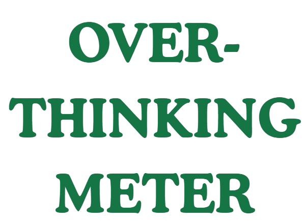
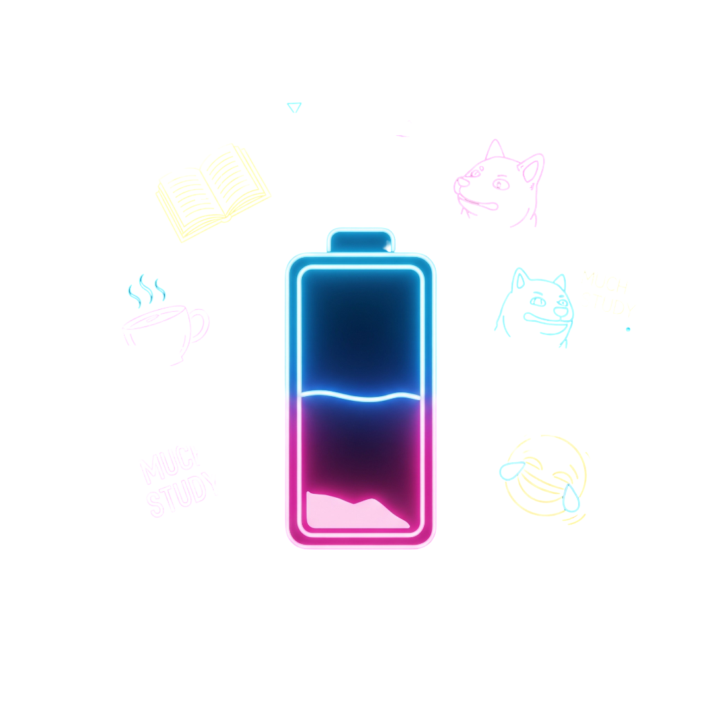

Low-Key Vibes Check
You know that mood when you just wanna wrap yourself in a blanket
burrito, binge sad Spotify playlists, and ghost everyone because
even typing ‘lol’ feels heavy? Yeah, that’s the low-key vibes we’re
checking here. It’s not about labels, it’s about seeing if your
brain is craving some sunshine or just some extra chill time.

Overthinking Meter
Imagine your brain is running 100 Chrme tabss at once — some are
about tomorrow’s viva, some about that text you sent two months ago,
and one is just playing random cat videos. That’s overthinking mode.
This meter checks if your thoughts are on turbo-speed WiFi or just
chilling at normal bandwidth.

Brain Battery %
Ever felt like your brain is just running on 10% battery but still
pushing through assignments, reels, and all the late-night chai
sessions? This test is your brain’s vibe-check meter. Let’s see if
you need a recharge nap or you’re secretly running on infinite
battery like Iron Man’s arc reactor. 🔋✨
